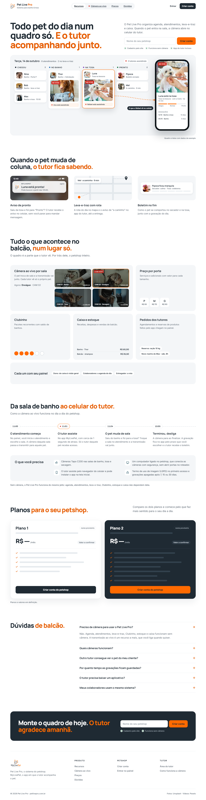
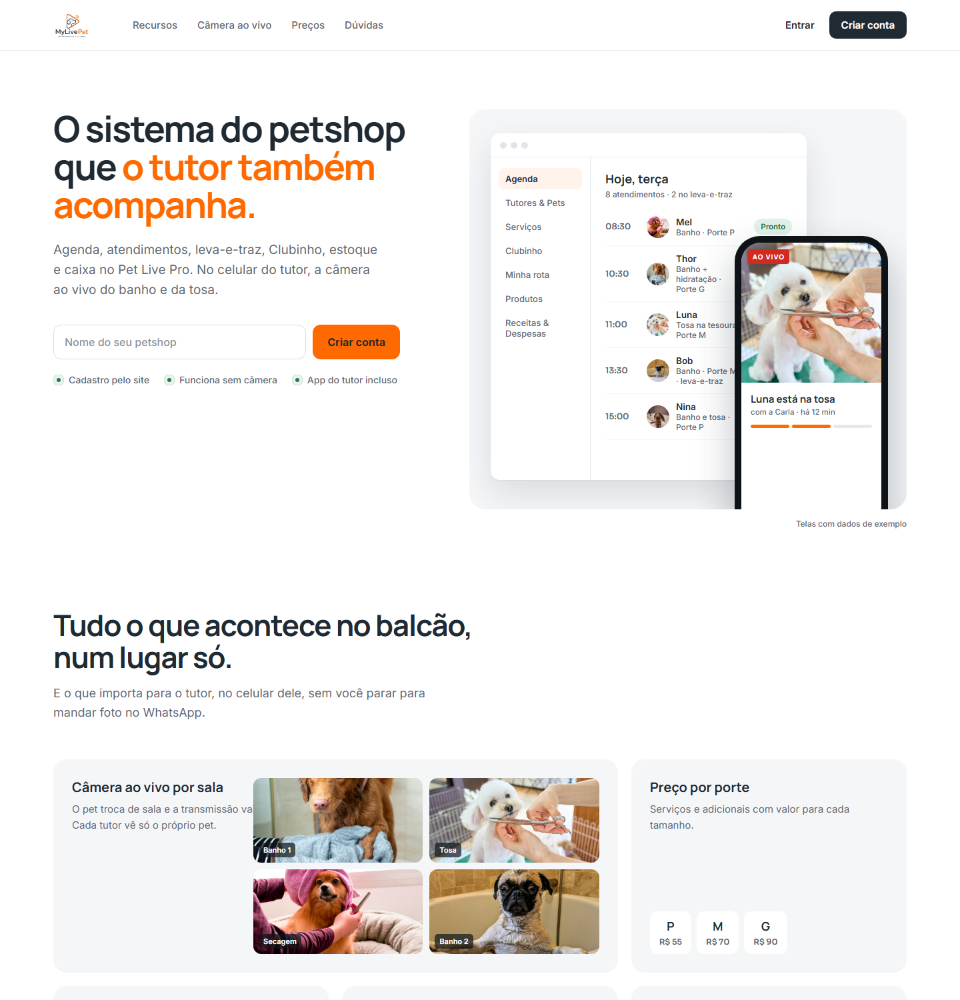
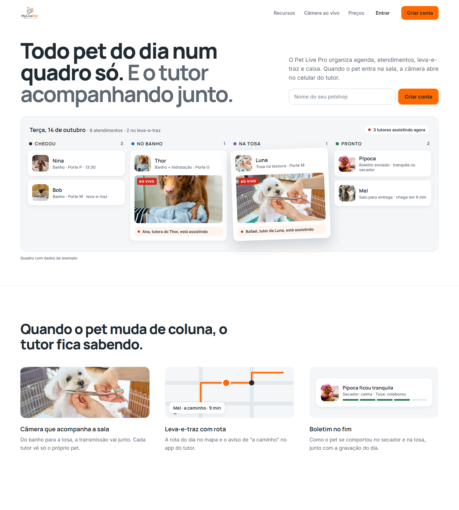
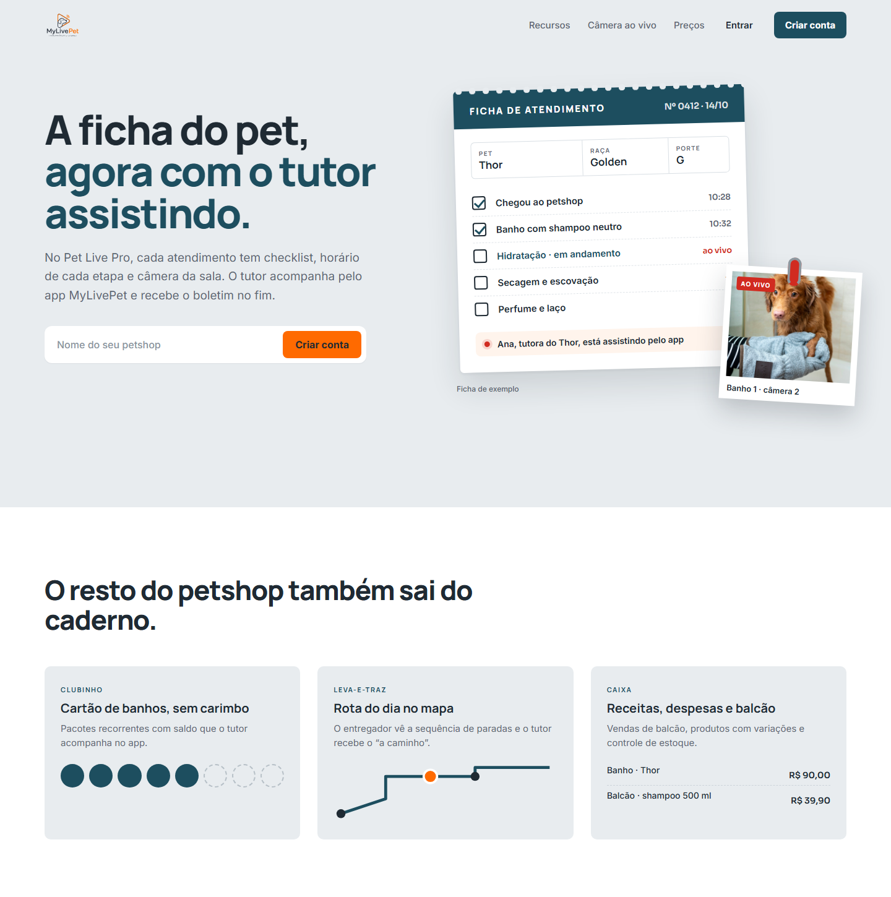
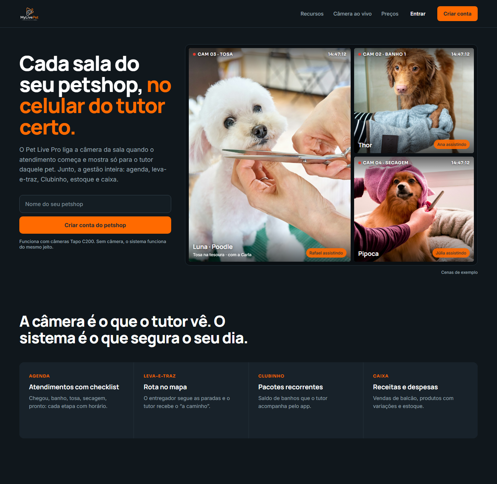
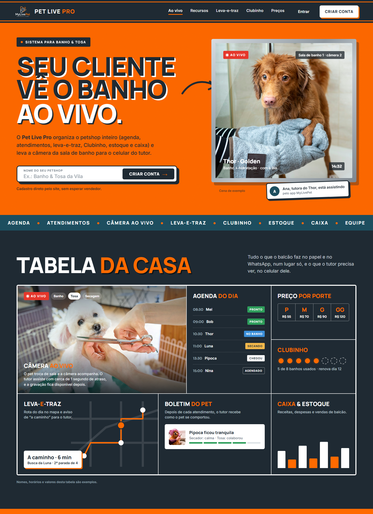
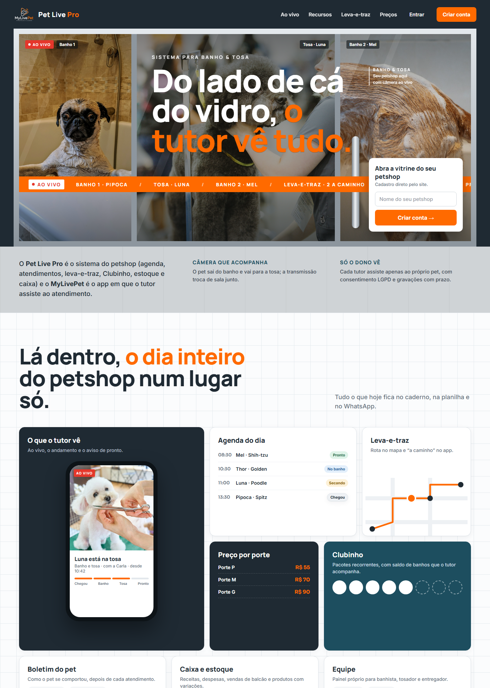
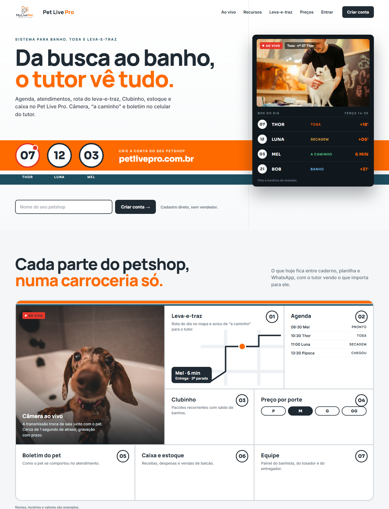

O título e o quadro do Quadro do dia, dentro do palco limpo do Clean. A Luna, na tosa, aparece em destaque e uma linha liga o card dela ao celular do tutor: de um lado o petshop, do outro o que o Rafael vê. Embaixo, “Quando o pet muda de coluna, o tutor fica sabendo” (aviso de pronto, leva-e-traz e boletim), o bento de recursos do Clean e um fechamento escuro com o cadastro.

Branco, muito respiro, o painel da agenda numa janela de navegador e o celular do tutor com a tosa ao vivo. Nível MoeGo e Gingr, bem executado. Risco: fica parecido com a concorrência.

Também claro e limpo, com o quadro Chegou / No banho / Na tosa / Pronto no centro e a câmera ao vivo dentro dos cards de quem está em atendimento.

A ficha de papel do pet com checklist e horários, e a foto ao vivo presa por um clipe. Risco: a metáfora de papel pode parecer antiquada.

Versão escura, com o mosaico de câmeras das salas e o tutor que assiste cada uma. Risco: pode lembrar vigilância e esconder a parte de gestão.

A parede laranja pintada à mão com a janela da câmera. É o desenho aprovado; a versão construída está em http://localhost:3002.

A fachada de vidro com as câmeras atrás e a faixa laranja passando os pets ao vivo.

A faixa da van atravessando a página, os números dos pets e o quadro de box.
